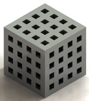
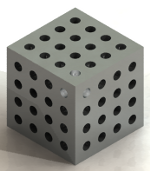
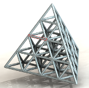
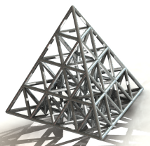

скачать @KUBIT@ (7zip-архив 341КБ)
Расчет массы, объема, площади твердотельной матрицы KUBIT(из кубиков),
TETRA(из тетраэдров) в форме прямоугольного параллелепипеда или тетраэдра.
Берем большой куб можно с разными сторонами и сверлим в нем дырки(круглые или квадратные сквозные отверстия).
Или собираем из звеньев маленький кубик и достраиваем к нему еще кубик и так собираем из таких кубиков большой прямоугольный параллелепипед.
Или собираем из звеньев маленький тетраэдр и из таких тетраэдров (одиночных или сдвоенных) собираем большой тетраэдр.
KUBIT KVADRAT - собирает матрицу из звеньев квадратного сечения(примитив-куб).

KUBIT CIRCLE - собирает матрицу из звеньев круглого сечения(примитив-куб,
присутствует погрешность).

KUBIT CIRCLE VblREZ - вырезает отверстия круглого сечения из заготовки и формирует матрицу, (
присутствует погрешность).

KUBIT TETRA - собирает матрицу в форме тетраэдра из звеньев круглого сечения(примитив-тетраэдр,
присутствует погрешность).

KUBIT TETRA DOUBLE - собирает матрицу в форме тетраэдра из звеньев круглого сечения(примитив-двойной тетраэдр,
присутствует погрешность).

KUBIT CHAIN - собирает матрицу из цепей(примитив-звено цепи).

- выбираем нужный вариант расчета
- изменяем входные данные в таблице
- нажимаем "вычислить параметры"
- данные под таблицей обновляются после окончания расчета
Необходима поддержка JavaScript!!!
Десятичный разделитель в числах - "ТОЧКА".
@KUBIT@ is free software distributed under the GNU GPL.
Read Copying.html for more infomation about license.
Copyright © 2009-2014 llll